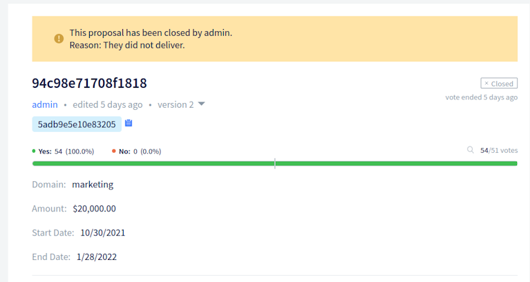

Decred月报 – 2021 年 10 月

图片: @saender
十月亮点：
- 恭喜Politeia 创建的第三个年头，并迎来了又一个繁忙的开发提案月。
- 来自@raedah 的移动钱包提案又获得了一年的资助。
- GoDCR 提案被拒绝，正在准备重新修订提案。开发也正在继续。
- DCRDEX 最新的更改使得可以在 BTC 中支付注册费并使用内置的 SPV 钱包而无需运行比特币全节点。
内容：
开发进展总结
除非另有说明，否则此处报告的工作仅限为“合并到主核心存储库”状态。这意味着这项工作已经完成、审查并集成到高级用户可以构建和运行的源代码中，但对于普通用户来说，还不能使用。
dcrd 是一个完整的节点实现，为 Decred 的全球点对点网络提供支持。
合并更改：
- 索引（交易、地址、存在地址）的更新已异步进行，以加快区块验证和连接代码的关键路径。它允许更快的投票传播，并有助于为其它优化、同步模型和最终更好的数据损坏恢复机制铺平道路。
- 简化为仅使用一个最新的检查点，因为标头优先同步不再需要中间检查点
- 提高
txscript封装测试的一致性和清晰度 - 修复了在链重组期间当他们的区块断开时自动撤销票证的处理
- 修复了对等地址管理中的数据竞争
- 固定
findcheckpoint和addblock工具 - libFuzzer支持已添加到 dcrd 的连续模糊测试套件中
dcrwallet 是命令行和图形钱包应用程序使用的钱包服务器。
- SPV 模式下的实现
getblockheader和getcurrentnet方法（供 DCRDEX 使用） - 添加
spv字段到walletinfo结果以区分同步模式 - 固定SPV 模式下的同步丢失
Decrediton 是一款功能齐全的桌面钱包应用程序，具有集成投票、StakeShuffle 混合、闪电网络、DEX 交易等功能。它在有或没有完整区块链的情况下运行（SPV 模式）。
面向用户的变化：
- 在闪电网络概览选项卡上实施了新的 UI 设计。Wallet、Network 和 Watchtowers 选项卡已分组在新引入的高级选项卡下。
- 钱包模式的新 UI 设计，增加了密码可见性切换
- 添加了在自动购票中使用随机 VSP 的功能（具有可配置的最高费用）
- 自动为新钱包启用新的每个账户加密
- 改进了VSP选择器的可用性
- ~13 个bug修复
内部的：
- 通过libdexc更新 DEX 集成以利用即将推出的 0.3 功能（本地化 UI、从种子恢复和发现现有帐户）
- 更新到Electron 15
- 添加了用于翻译字符串的新 GUI 工具和社区翻译人员指南
- 帐户视图的自动化测试

Decrediton 闪电网络概览
Politeia 是 Decred 的提案系统。它用于向 Decred 国库申请资金。
面向用户的变化：
- 添加了一种标准方式来显示任何状态更改。审查或放弃提案的管理员与他们给出的状态更改原因一起显示。
- 支持多种计费状态更改。默认情况下只允许单个计费状态更改（从活动到已完成或已关闭），但它是一个可配置的设置。如果管理员出错，系统管理员可以临时更新设置以更正错误。也可以暂时禁用状态更改。
- 改进和规范了身份错误。现在，只要用户尝试将数据写入 Politeia，而没有在浏览器中加载其活动身份，就会显示相同的错误。错误消息定向到用户详细信息页面以解决问题。
- 修复了多条评论导航UX 问题：过滤首选项丢失、返回按钮无法正常工作、单个线程加载缓慢、UI 闪烁
- ~5个其它bug修复
在更改politeiavoter命令行工具：
- 改变了涓流方法（缓慢发送选票）的方法。以前它以随机时间间隔按顺序发送选票。这已被证明是脆弱的，因为一个缓慢/失败的发送延迟了所有其他投票。新方法使用独立的并行投票过程，这些过程在随机时间开始并且不会相互影响，使涓流更加稳健。
- 如果在投票结束前有足够的额外时间无法完成投票，则添加了一个中止选项。它会提醒用户调整参数，以便有足够的时间（默认为 12 小时）来重试任何失败的投票，这可能是由于连接不良或 Tor 造成的。
后端和内部变化：
- 添加了用于获取计费状态更改的API
- 允许批量获取账单状态变化
- 对页面大小使用服务器策略
- 添加的数据完整性检查
ticketvote和comments插件 - 添加了一个新
pictl命令来测试 RFP流程 - ~4个bug修复
- 对politeiawww 代码库进行了重组，将遗留API 移到一个
legacy包中。这将更容易重写用户层以使用插件架构并允许水平扩展。 - 提取
logger包以允许插件配置其日志记录并成为独立的 - 提取的
websockets包（将使扩展服务器更容易） - 将配置处理提取到自己的包中，并分离出遗留 API 的设置，以便将来更容易删除
- 将身份处理方法移至更合适的位置
- 添加了一个通用会话存储（将替换没有适当关注点分离的遗留存储）

Politeia 上没有免费资金
vspd 是用于运行投票服务提供商的服务器软件。VSP 代表其用户 24/7 投票并且不能窃取资金。
dcrlnd 是 Decred 的闪电网络节点软件。闪电网络支持即时和低成本的交易。
DCRDEX 是一个去信任交易的非托管交易所，由原子交换提供支持。
面向用户的变化：
- 重新设计的注册流程以接受DCR以外的资产
- 在左侧边栏中添加了当前价格和 24 小时变化的概览
- 改进注册顺序和表单设计/动画
- 添加了Bitcoin SPV支持，无需管理完整的比特币区块链即可与 BTC 进行交易。建立在Neutrino 和 btcwallet之上（旧投资得到回报！）。
- 从某个日期开始 BTC SPV 钱包扫描以节省时间
- 需要"zpub"扩展公钥，但为方便起见提供从“xpub”转换。这适用于愿意接受 BTC 注册费的服务器运营商。
- ~6个bug修复
内部变化：
- 支持同一个应用种子的多个HD帐户，如果初始帐户被暂停，允许注册额外的帐户。此更改还会停用具有随机密钥的旧帐户，以确保所有新帐户都可以从应用程序种子派生。
- 重构客户端 DCR 后端以支持替代钱包实现。这将用于将 DCRDEX 集成到 GoDCR。
以太坊支持的进展：
DCRDEX 市场概览。显示的数据不是真实的。
- 显示8位小数的非零余额
- 暗模式的固定颜色和图标
GoDCR 是一款轻量级桌面钱包应用程序，集成了质押、隐私和 Politeia 浏览功能。
面向用户的变化：
- 添加了一个按钮来快速隐藏钱包余额以增加用户的肩部隐私
- 添加了备份种子词的提醒
- 使用Tab键循环输入字段
- 关于密码和种子的统一术语
- 在 Politeia 提案工具提示中显示更多详细信息
- 显示自上次更新Politeia 数据以来的时间
- 改进了交易页面上的时间信息
- 在长列表上添加了可拖动的滚动滑块
- 在某些情况下允许空密码
- ~10 个bug修复
内部变化：
合并到dcrlibwallet库中（由 Android/iOS 钱包和 GoDCR 共享）：

GoDCR 提案视图
尽管第二个GoDCR提案被拒绝（49% 是），但开发仍在继续。期待修订版和新的应用程序构建。
dcrdata 是 Decred 区块链和链下数据（如 Politeia 提案、市场等）的浏览器。
- 更新了Decred 依赖项
- 升级到Bootstrap 5
人员
欢迎新的首次贡献者将代码合并到 master：@AdimekweEbuka (godcr)！
截至 11 月 2 日的社区统计数据：
- Twitter 粉丝: 49,503 (+830)
- Reddit 订阅: 12,248 (+294)
- Matrix #general 用户: 551 (+16)
- Discord 用户: 2,267 (+190)
- Telegram 用户: 2,940 (+31)
- YouTube 订阅: 4,620 (+10), 观看: 197K (+1K)
治理
10 月，新国库收到了价值 130 万美元的 10,678 DCR，当月平均利率为 121.57 美元。974 DCR 用于支付承包商，按 10 月的费率计算，价值 118,000 美元，或按 9 月的费率 139.56 美元计算，价值 136,000 美元。截至 11 月 1 日，旧国库 和 新国库的总余额为 733,772 DCR（8250 万美元，合 112.42 美元）。
本月提交了一项提案，@ammarooni 撤回了一项提案，该提案修改了早期的书籍提案，以支持源源不断的论文和社交媒体内容、meme和聚会。
来自@raedah 的两项提案于本月投票，一项针对移动钱包的提案以 97.2% 的赞成票和 66% 的投票率获得批准，而继续资助GoDCR的提案以49% 的批准率和 73% 的投票率被拒绝。
有关本月提案的更多详细信息，请参阅 Politeia Digest第 47 和 第48期。
@richardred 发布了 Politeia 第三年的数据和图表。几个亮点：
- 发表提案31条，其中通过20条，拒绝11条，放弃2条
- 平均选民参与率在第 3 年显着提高，为 46%，而第 1 年为 31%，第 2 年为 28%
- 软件开发提案在数量、预算和选民支持方面都有所增加
- 营销提案数量减少，不再占主导地位，尤其是批准率很低的营销提案数量减少了
- 已经是承包商的人的提案比例从第 2 年的 48% 上升到第 3 年的 77%
- 混合选票（具有额外隐私的票）的数量一直在增加
- 3 年历史数据：128 项提案发布，其中 66 项通过，42 项拒绝，20 项放弃

Politeia 第三年
网络
全网算力: 10月份算力初始为~237 Ph/s，结束时为~284 Ph/s，全月最低为164 Ph/s，最高为323 Ph/s。
11 月 1 日各矿池的算力分布：Poolin 矿池 43%、F2Pool 29%、蚂蚁矿池 10%、BTC.com 6.4%、ViaBTC 6%、Luxor 4.5%、HuobiPool 0.5%、OKEx 0.4%、CoinMine 0.2%
11 月 1 日实际开采的 1,000 个区块的分布：Poolin 矿池 42%，F2Pool 31%，蚂蚁矿池 9%，BTC.com 7%，Luxor 5%，ViaBTC 5%，OKEx 0.7%，未知 0.3%。

Decred 哈希率 2021 年 5 月至 10 月
Staking: 票价 139.7-209.7 DCR之间变化，30天平均为191.6 DCR（-7.8）。
锁定量为7.65-8.20百万DCR，这意味着循环供应的56.7-61.1％参加在验证。

Decred 选票池 2021 年 5 月至 10 月
VSP: 在 11 月 1 日，大约 7,400 (-200) 个现场票由列出的vspd 服务器管理，224 (+4) 个由列出的旧版 dcrstakepool 服务器管理。7 个旧版 VSP 和 15 个新 VSP 总共管理着票池的 18.9% (-0.1%)。
Nodes: 根据dcrextdata，整个 10 月大约有 200 个可访问节点。
截至 11 月 1 日快照的节点版本（共 245 个，仅 dcrd）：v1.6.2 - 59%，v1.7 dev builds - 13%，v1.6.0 - 12%，v1.6.1 - 9%，v1.6 dev builds - 3%，v1.5.2 - 2%，v1.5.1 - 0.8%。
混合代币的份额在 52.3-54.4% 之间变化，并创下历史新高，混合的代币总数超过 730 万。
生态系统
旧版 VSP stockpool.eu已从VSP列表中删除，以方便用户迁移到新的vspd 系统。仍然在线投票剩余的现场选票（截至11月1日有7张）。这个 VSP 于 2016 年 5 月推出，代号为IndiaDecred诞生仅 3 个月后。感谢您的 5 年服务！
来自 99split.com 的旧版 VSP 已处理其最后的现场选票并已关闭。它自 2019 年底开始服务，是少数通过协调会议和创建用户友好的视频教程来积极支持选票拆分的供应商之一。欢迎用户使用其新的vspd 实例，收取 0.99% 的费用和 1.7K 票。
对于仍在使用旧版 VSP 的任何人，建议切换到vspd服务商以避免错过门票的风险，例如，如果旧版 VSP 关闭或停止与即将到来的共识升级一起工作。截至 11 月 1 日，所有旧版 VSP 管理的门票不足 260 张，占门票池的 0.6%。
警告：Decred 期刊的作者不知道上述任何服务的可信度。在将您的个人信息或资产信任给任何实体之前，请自行研究。
外展
Monde PR 十月份的成就：
- 向金融和加密出版物发表了一个故事
- 获得四次媒体采访
获得以下新闻文章：
- Crowdfund Insider报道了有关 Decred 达到 77% 的选民参与度并标志着 Politeia 成立三年的消息
回答一个常见的问题“Decred 发生了什么以及它的发展方向？” @bee总结了最近的发展和中期目标。
@cryptotivo 祝贺大家获得 60 万个“无聊”块里程碑：
👂听说过伟大的#Decred 黑客吗？
最近的#Decred 地毯拉动怎么样？
是的，我也没有，因为它们不存在。
Decred 最近生产了第 600 000 个区块。
祝贺团队、利益相关者和有远见的人 🎖️ (@cryptotivo)
媒体
精选文章：
- 数字和图表中的 Decred Politeia 第三年 @richardred (blockcommons.red)
- 77％的选民参与的Decred命中治理的里程碑 (decred.org
- The Suppressor 第 2 部分: @tacorevenge 的链上分析e (medium)
视频：
- 10 月 9 日的 GoDCR 进度演示(twitter)
- Decred 深度 Ep。44 - with Coin Artist - Decred 历史观 + NFTs + Metaverse + Neon District by @elima_iii (youtube)
- WDYT：对 Decred 的想法？NFT 每日新闻 (youtube)
- Decred 价格分析 - 2021 年 10 月 20 日，Brave New Coin (youtube)
翻译：
- 未来就在眼前：Raedah Group 的 Steven Wagner 讲述他们的技术创新将如何改变科技界 - 西班牙语 by @francov_
- Politeia Digest 47 - 西班牙语 by @francov_
- Decred Journal 2021 年 9 月被翻译成阿拉伯语（@arij、@abdulrahman4）、中文（@Dominic）和西班牙语（@francov_）。感谢大家的陪伴！
其他非英语内容：
市场
10 月 DCR 的交易价格在 102.40-140.10 美元 / BTC 0.0018-0.0025 之间。平均每日交易价格为 121.57 美元。
@tacorevenge 发布了对涉嫌操纵 DCR 市场的 The Suppressor 实体的调查的第二部分。这次使用链上分析来查看资金如何在矿工、中心化交易所和 DCRDEX 之间流动。

DCRDEX 10月交易量
相关外部信息
Zcash再次对其代币持有者进行了投票，这次的主题是是否将共识机制从工作量证明中移除。投票的 41,000 个 ZEC（占流通供应量的 0.3%）中有 85% 将放弃 PoW 作为该项目的第一要务。目的是完全从工作证明转向某种形式的股权证明或等效形式。
Sam Altman 和其他硅谷风投透露了他们对普遍基本收入的愿景，人们必须提交独特的眼球哈希才能声明，隐私倡导者纷纷表示这是一个坏主意。显着的特点是让人联想到反乌托邦科幻小说的球形眼球扫描仪，以及 20% 的 VC premine。
最新的 DeFi 空投农业争议涉及 Ribbon Finance，其中一位来自 Divergence Ventures 的研究人员使用数百个不同的钱包成功满足了资格标准，并收到了价值 250 万美元的代币。一位独立研究人员注意到了这种模式，并通过与 ENS 域的关联确定了钱包所有者，他们建议在 Twitter 上复制交易它们，但它爆炸了，Divergence Ventures 最终归还了所有空投的代币。
Cream Finance 已被黑客入侵1.3 亿美元，这是过去 3 个月内的第二次重大黑客攻击。这次攻击使用快速贷款在两个地址之间反复借出和借入资金，并利用定价漏洞耗尽了 Cream 的许多流动资金池。一位 DeFi 内部人士的分析表明，这次黑客攻击是由熟练的 DeFi 开发人员执行的，很可能在从事一个竞争对手的项目。攻击者还留下了一条隐晦的信息，似乎在嘲讽项目列表并指责 Yearn 开发人员，一些 DeFi 开发人员已经开始在他们的推文中提到“战争”。
DeFi 协议 Indexed Finance 被黑客入侵了 1600 万美元，但确定了攻击者的身份。关于如何识别攻击者的故事很有趣，涉及对维基百科的编辑，他们将自己描述为“著名的数学家”。随后发现攻击者是一名青少年，他们决定在法庭上测试“代码就是法律”猜想，看看他们是否可以保留他们的闪电贷赏金，而不是返还 90% 的资金。
生物Toadz NFT社区是被骗的45分钟，然后将拍摄下来之前88 ETH被发送到攻击-攻击者谁张贴在他们的不和谐假铸币链接。黑客的身份被发现后，资金很快被退回。
在狗钱的狗吃狗世界中，AnubisDAO以 6000 万美元的投资者资金快速拉动了这个没有网站的新狗令牌的初始令牌销售 20 小时。对于攻击是由项目内部人员还是网络钓鱼项目内部人员执行的，存在一些争议。
一个新的加密新闻专线已经启动，它由 DAO PubDAO运行。
受欢迎的赞助服务 Patreon 正在考虑取消对用户在其平台上提供和推广社交代币的禁令。
臭名昭著的 1 万亿美元基础设施法案已经回到众议院，有人发现了一个更加恶劣的反加密条款：6050I。该条款将要求数字资产的接收者在许多情况下收集有关发送者的各种信息，并在 15 天内向 IRS 报告。这项规定直到最近才被发现，但在基础设施法案通过众议院时对其进行修改显然已经为时已晚。
最新的加密时尚不是新的区块链，而是人们购买并持有的小块钨。没过多久，有人想出了一个Tungsten DAO，它铸造了一个 NFT 代表一个非常大的钨块，并以250,000 美元的价格卖给了一个有权每年访问一次的持有者，以查看和触摸它（它太重而无法保持或交付）。
这就是十月的全部。在我们的#journal聊天室中分享您对下一期的更新。
关于月报
这是Decred Journal的第43期。有关所有问题，镜像和翻译的索引，请参见这里。
来自第三方的大多数信息都是在经过最低限度的健全性检查后直接从源中转过来的。Decred 月报的作者无法验证所有声明。请提防诈骗并自行研究。
感谢 (字母排列):
- 写作和编辑：bee, bochinchero, degeri, l1ndseymm, richardred
- 评论和反馈： davecgh, lukebp
- 封面图片： saender
- 资助: Decred stakeholders
中文社区
- 社区网址
- 微博
- 微信公众号
- 中文电报群
- bilibili频道
- QQ群号-258412796